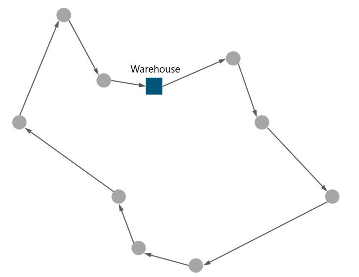

This section
includes the description of the main alternatives to implement the Logistics
& Warehousing operations: Self-Managed Services and 3rd Party Managed
Services. For each alternative, the main characteristics involved in the
implementation processes are examined.
This section
provides methodologies that aim to support NaaS operators in the definition and
implementation of Logistics & Warehousing processes using internal
resources.
4.1.1
Warehouse Planning & Design
This section
examines the main components that comprise the Warehouse Planning & Design
(i.e. Warehouse Location and General Layout), providing methodologies for its
execution. In addition, a special analysis is performed regarding the benefits
of implementing Warehouse Kitting.
4.1.1.1
Warehouse Location
Warehouse
location definition involves a hierarchy of decisions. The first of them is to
define the geographic region to settle the Warehouse location, which is defined
by the regions where RAN sites are deployed.
After
establishing the geographical region, the aim is to find the best location
based on geographical distances. A simple method to find the best compromise
location is to calculate the Center of Gravity of the RAN sites that will be
deployed. The coordinates of the Center of Gravity can be calculated as
follows:
(Eq. 1)
Where:
() are the coordinates in decimal notation of the center of gravity,
which gives the center of the radius search.
() are the coordinates in decimal notation of each of the RAN sites
in the analysis.
is a factor that represents the priority of the nodes. This
priority can be assigned by the NaaS operator based on the number of people
covered by the RAN node.
After
calculating the Center of Gravity, a search radius must be established to look
for nearby facilities. The size of the search radius will depend on the
geographic conditions of the region and the availability of potential
facilities. Figure 8 displays an example of the calculation of the Center of
Gravity for the RAN sites ( ) and its associated Search Radius using the equations above.
) and its associated Search Radius using the equations above.

Figure 8. Example of Warehouse Location
Calculation
This approach,
based on the location of the RAN sites, is selected for the following reasons:
Firstly, during the intensive deployment phase, having the Warehouse uniformly
away from all the RAN sites, maintains steady the Outbound Transportation
costs, as in average, all the transportation costs are similar. Furthermore,
after the deployment phase is completed, the spare equipment will be kept
stored in Warehouse facilities. A Warehouse location relatively close to all
the RAN sites reduces the Mean Time To Repair (MTTR) times, improving the
network s overall availability.
Once multiple
potential facilities have been identified for Warehouse location, a comparison
must be performed considering the following criteria:
- Rent rate & Taxes Rent costs are the most impactful criteria
when selecting the right location of a Warehouse. In addition, special
attention must be paid to local governmental regulations, tax structure and tax
incentives.
- Workforce Availability,
Labor Skills & Costs
Workforce availability, skills, and labor costs are directly associated with
local demographics. Not every geographical location offers a workforce with the
right skills at the right price.
- Roads, Highways &
Traffic Flow - Accessibility to
roads and highways and local traffic density must also be considered,
especially if trucking is the primary mode of transportation.
4.1.1.2
General Layout
The Warehouse
layout describes the physical arrangement of storage racks, loading and
unloading areas, offices and all other facilities within the Warehouse. The
layout definition is an essential part of planning as it has a significant
effect on the efficiency of Warehouse operations.
The following
elements are the most important elements to be considered within the Warehouse
layout:
- An Arrival Bay, where
materials coming from suppliers are delivered, checked and sorted.
- A Storage area, where the
materials are kept as stock. It comprises the Bulk Store and the Picking Store.
- A Departure Bay, where work
orders are assembled and sent out.
The most common
outline for the Warehouse considers the basic flow of materials. The materials
are delivered in the Arrival Bays and moved to the Bulk Store, which is the
main storage area. The different elements in the Bulk Store pass through the
kitting process and moved to the Picking Store. When an order is received, the
associated elements with the order are picked from the Picking Store and moved
to the Preparation Area before moving to the Departure Bays.
Figure 9
illustrates the typical Warehouse layout for NaaS operators.
Figure 9. Typical Warehouse Layout
Additional
elements to consider when planning a Warehousing are:
- A material handling system
for moving materials inside the Warehouse (e.g. conveyors, pallet jacks,
industrial trucks).
- Information systems (e.g.
Warehouse Management System, Stock Locator Systems) that keep track of the
materials, deliveries from suppliers, materials shipped to sites and other
relevant information such as inventory location within the Warehouse.
4.1.1.3
Warehouse Kitting
The general
conception of Warehouses is that they are used only to store materials.
However, the overall trend for Warehouse locations is to be used for doing a
range of related jobs. Among other activities, kitting has especially
significance in the NaaS operators context.
Warehouse
Kitting is the process of taking different yet related SKUs and combining them
together to create a new SKU. Essentially, it involves fulfilling NaaS operator
orders by pre-assembling individual items into kits that are ready to ship out
right away, rather than picking them individually.
This kind of
consolidation can go further than simply bringing together materials from
different sources and store them as a group. It can also add the final
packaging to present it as a single bundle, or even do a limited amount of
final assembling.
In the NaaS
operator context, kitting can be applied by collecting the different equipment
from different vendors and technologies and create a consolidated Site Bundle.
The Site Bundle includes the RAN, Transmission and Power equipment, as well as
all ancillary parts required to deploy the site.
The elements
included within each Site Bundle can be defined based on the Model Site
Catalogue generated in the RAN and Tx LLD Process. These Model Sites include a
list of the elements required to deploy each technology and can be used to
define the different Site Bundles.
Kitting the Site
Bundles offers a number of benefits for NaaS operator, which include among
others:
- Organizes the inventory Warehouse kitting is excellent to maintain
the warehouse organized and streamlined overall. When applied correctly, it can
generate fewer SKUs, making it easier to organize the inventory effectively.
- Increases Warehouse
Efficiency Kitting increases
warehouse efficiency by making it simpler for warehouse personnel to locate all
parts in one place. This is crucial in NaaS operators context as it reduces
the complexity of collecting the equipment to deploy a specific site.
- Faster, more reliable
Shipping Process - Kitting
can ensure that shipping process is simpler and more efficient, cutting down on
the risk of human error and decreasing fulfillment times.
4.1.2
Transportation Network Design
The
Transportation Network is responsible for the physical movement of the materials
between NaaS operator Warehouse and the final RAN site location. The
Transportation Network Design seeks to optimize objectives (e.g., cost of
transportation and total travel time) through the selection of appropriate
modes of transportation and optimal route planning.
4.1.2.1
Mode of Transportation Definition
The mode of
transportation describes the type of transport used to move the materials among
facilities. There are different options (e.g., rail, road, water and air), each
with different characteristics. The most common modes of transportation used by
NaaS operators are examined in the following subsections.
Road
Transport
In the NaaS
operator context, road is the most widely mode of transportation. Its main
benefit is the flexibility, as it can be used to visit almost any location.
Moreover, the ability to provide an end-to-end service avoids transfer to other
modes reducing the overall travel time.
Furthermore,
vehicles do not have to keep such rigid timetables (compared with trains or
airplanes), so they can go on journeys at short notice and with little
planning. Nonetheless, travel speed can be an important consideration,
especially as roads are becoming more congested and vehicles are particularly
vulnerable to congestion and traffic delays.
Finally, it
needs to be considered that in rural environments, most of the roads will not
be paved and special considerations have to be examined for the transport
vehicles.
Multi-mode
Transport
Multi-mode
transport involves the combination of two or more different modes of transport.
In this way, the benefits of different modes can be combined, avoiding the
disadvantages of the others.
Multi-mode
transport is particularly relevant for NaaS operators as in most cases in rural
areas, combining different modes of transport is the only way to transport the
network elements to distant nodes.
The main issue
is that each transfer between different modes causes delays and increases the
costs of extra handling. Therefore, efficient transfers are vital to implement
multi-mode transport, coordinating transport schedules to avoid additional
delays.
4.1.2.2
Route Planning
Route Planning
analysis is used to ensure that transport infrastructure is used efficiently,
and all planned deliveries will be covered in time by defining the most
effective routes for transportation.
The fundamental
routing problem looks to establish the best path for a delivery vehicle that
needs to visit a set of locations in their route. This problem is known as the
Travelling Salesman Problem and is illustrated in Figure 10.

Figure 10. Travelling Salesman Problem
The Travelling
Salesman Problem is the basic routing problem, however, NaaS operators face
more complicated scenarios. Typical scenarios contain multiple factors as a
fleet of different types of vehicles, different warehouse facilities and sites
with different priorities and conditions for deliveries.
As it is
difficult to model a complex scenario as the established before, the following
methods are proposed to perform the route planning:
- Adjust previous plans A useful approach is to keep records of
previous planned routes and update them based on current conditions. This
approach has the benefit of being relatively easy to implement and causing
little disruption. However, the routes may take a long time to be designed.
- Use of specialized
systems There are specialized
software in the market that can be used to generate the routes. Most of these
tools use proprietary algorithms to generate optimal routes. However, the
licensing cost can be a limitation for low budgets.
Alternatively,
the following algorithm can be applied to generate the Route Planning. The
proposed algorithm to generate the Route Planning is based on the 2-opt
algorithm and is comprised of the following steps:
- Step 1. Establish a preliminary route that visits all
the destinations starting by the Warehouse facility. For this, look for the
closest destination and add it to the route. Follow the same approach for the
next destination, going only to the closest non-visited destination. Once all
the destinations are visited, return to the Warehouse facility. Calculate the
total distance of the preliminary route.
- Step 2. Select randomly two locations in the route,
swap their positions in the route and calculate the total distance of the
route. If the total distance decreases, maintain this route and go to Step 3.
If the distance increases, return to the previous route and go to Step 3.
- Step 3. Repeat Step 2 until no significant reduction in
the total distance of the route is achieved.
The main idea
behind the proposed algorithm is to enhance the preliminary route by taking a
route that crosses over itself and reorder it, as displayed in Figure 11.
Figure 11. Proposed algorithm for Route Planning
This section
describes the procedures to perform the selection of vendor(s) to provide
Third-party Managed Services for Logistics & Warehousing activities.
The selection of
the appropriate Service Provider for managing the Logistics & Warehousing
activities requires conducting an RFI/RFP (request for information and
proposal) process, which analyzes the providers ability to fulfill the tasks
and also obtains pricing information to fulfill the required services.
It must be noted
that the L&W Managed Services RFI/RFP process benefits from the framework
setup established in the RFx Process Module. It is recommended to examine the
RFx process module for further details regarding the overall process. The RFx
Process Module provides a general overview of the end-to-end RFx process,
including the description of the activities which take place for RFx
development, as shown in Figure 12.
Figure 12. RFx process
RFx are issued
to obtain information, proposals or quotes from different service providers
available in the market. RFx processes play an important role in the NaaS
Operator organization, which as other organizations relies on the procurement
of products and services from external sources.
The RFx document
must clearly identify the RFx objective (obtain information, proposal and/or
quotes), the scope of the technical project, the instructions to respond and
applicable terms and conditions. A L&W
RFI/RFP document Template is provided as part of the Runbook, including the
sections described above. NaaS operators can modify the baseline format and
tailor it for their specific requirements and conditions.
Before starting
the RFI/RFP process, it is necessary to select the service providers that will
be receiving the documentation. The following
sections provide instructions to select, invite and prequalify potential
bidders for the process.
4.2.1
Logistics & Warehousing: Identifying
Providers
The first step
is to identify potential service providers that address the Logistics &
Warehousing RFx scope, with an eventual invitation to bid.
NaaS operators
should invite service providers with proven experience directly with the
initiative and/or with similar initiatives. In the absence of previous
references, candidates may be included via web research as well as by
requesting a list of Logistics & Warehousing potential partners to local
partners and authorities, local Chambers of Commerce and professional associations.
4.2.2
Invitation to tender
After
identifying the potential respondents, The NaaS Operator shall submit an
invitation to tender to the identified service providers to inform them about:
- The Name of the RFx Process
- An abstract on the Scope of Work
- The RFx process relevant dates
- A Pre-qualification form
- A request for an
acknowledgment and intention to respond
Along with the
invitation to tender, potential respondents shall receive a pre-qualification
form. This form provides key questions that NaaS Operators will use to
determine the suitability of the potential respondent to address the project
scope. This qualification form will include both technical, commercial and
legal questions with the objective to short-list the proper set of service
providers invited to the RFI/RFP process.
4.2.3
Logistics & Warehousing Providers Evaluation
NaaS operators
must perform the selection of the L&W Service Provider from multiple vendor
alternatives. The complete process to select the L&W Service Provider is
included within the Procurement Process & Vendor Management Module and the
RFx Process Module. This section focuses on the aspects to be considered for
the evaluation of L&W Service Providers.
From a technical perspective, Table 1 displays the typical
requirements that the L&W Service Provider must satisfy according to the
type of transportation provided.
|
|
Evaluated
Requirements
|
|
Transportation Conditions
|
Ensure
that delivery staff are well-trained in handling and verification of Telecomm
equipment
|
|
Only
use vehicles that will not expose supplies to excessive heat
|
|
Ensure
all goods in transit are comprehensively insured
|
|
Ensure
that all loading and offloading is done only at the assigned drop locations.
|
|
Process
Tracking
|
Provide
a weekly status report on deliveries in progress and those completed
|
|
Ensure
deliveries are executed within 5 working days after receipt of consignments
|
|
Ensure
documentation returned to NaaS Operator by working day 7 after receipt of the
consignments
|
Table 1. Typical requirements
to be evaluated in L&W Service Providers
The decision to
select the L&W Service Provider is also affected by the financial
constraints of the project. The final selection of the L&W Service Provider
is performed during the RFx process and in conjunction with the Procurement
Team.
This section describes general procedures for implementing the management processes related to the ordering, transportation, storing, packaging, and use of the NaaS operator inventory.
Inventory Management refers to the process of ordering, storing, and using the NaaS operator Inventory. This section provides methodologies to perform the management of the Inventory elements in the NaaS operator context.
5.1.1
Inventory Management Methods
The most common management methods implemented in the industry are Material Requirements Planning (MRP) and Just-in-Time (JIT). However, JIT is not entirely suitable to be implemented by NaaS operators as, among other restrictive requirements, it demands minimal lead times, which is hard to obtain for telecommunication equipment, especially in rural environments. Therefore, only MRP is further examined in this section.
5.1.1.1
Material Requirements Planning
Material Requirements Planning (MRP) is a method used to calculate the materials and components required for the NaaS operator activities. It consists of three primary steps: taking inventory of the materials and components available, identifying which additional ones are needed and then scheduling their procurement process.
MRP operation consists of three primary steps summarized as:
- Step 1. Use the Deployment Plan to find the gross requirements for materials on a monthly basis. The Deployment Plan number of RAN sites and the forecasted deployment date.
- Step 2. Calculate the materials net requirements by subtracting any available stock and orders in process, as shown below:
(Eq. 2)
- Step 3. Schedule the order with appropriate times to
meet the net requirements.
- Step 4. Complement the Order Schedule Plan, adding any
specific adjustments such as
minimum order sizes, discounts, and the minimum stock levels.
After completing
the steps above, the NaaS operator gets a detailed schedule plan for material
orders. Figure 13 displays a high-level view of the MRP operation.
Figure 13. Material Requirement Planning
operation
As can be
inferred by analyzing the process, MRP avoids the additional costs of keeping a
large inventory by relating the supply of materials directly to the demand.
Furthermore, MRP can also give early warning of potential problems and
shortages. For instance, if the MRP schedule shows that some materials will
arrive too late, the NaaS operator can speed up the deliveries or even change
the deployment plans.
More details of
the methodology to calculate the exact amount of material to order and the most
appropriate time to do it can be found in the following section.
5.1.2 Inventory Volume Considerations
During the Deployment Phase, NaaS operators must maintain certain inventory stored in stock to enable an efficient network rollout. In order to obtain this material, a Purchase Order (PO) must be issued to equipment vendors, which specifies the purchased material volume. The following considerations must be taken into account regarding the order volumes requested from vendors:
- Once materials arrive at Warehouse, certain activities must be performed to properly classify the inventory (e.g., labelling). The order volume directly impacts the required time to perform these activities.
- To deploy a new site, the complete bill of materials which includes equipment for different technologies (and/or vendors) and installation ancillaries must be consolidated into a single bundle (e.g. kitting). Warehouse must have the adequate personnel and abilities to comply with these activities. Otherwise, the kitting process can be outsourced to the network equipment vendor.
- Large material volumes require high average stock levels, which inherently increases the total Holding Costs and the required storage space.
For the reasons above, it is highly recommended to optimally estimate the purchase order volume. The methodologies to perform this estimation are presented in the following section.
In case that a significant volume of material is required to comply with the deployment plan, NaaS operator must take the following general considerations:
- A qualified warehouse/vendor should be considered to perform the warehouse activities. Additionally, the establishment of clear Service Level Agreements (SLA) is mandatory to achieve an efficient vendor management.
- In the self-managed and third party-managed, it is highly recommended to implement an Inventory System that oversees the inventory management activities.
5.1.3
Logistics & Warehousing Metrics Calculation
As stated in
previous sections, NaaS operators need to maintain certain Inventory elements
stored in stock as part of their deployment process. In particular, there are
two main questions that NaaS operator faces regarding the Inventory elements:
- How much should the NaaS
operator order?
Large orders involve high average stock levels,
whereas small orders imply a high cost of placing multiple small orders. The
Economic Order Quantity provides guidance to address this issue.
- When should NaaS operators place an order?
The answer to these question depends on multiple
factors, among others, lead time to obtain the materials and supplier
reliability. Defining a Reorder Level helps in answering this question.
5.1.3.1
Economic Order Quantity (EOQ)
The goal of the
economic order quantity (EOQ) is to identify the optimal number of product
units to order that minimizes the total costs related to ordering, receiving,
and holding inventory. EOQ is an excellent approach to face the Inventory order
issues as it is flexible, easy to implement and provides guidelines for a wide
range of circumstances.
The materials
are delivered in batches from a supplier who delivers after a constant lead
time. Once stored, the materials are dispatched over the different sites and
the stock levels decrease. There is a point where new materials need to be
reordered to increase the stock level. Therefore, the stock levels within a
Warehouse follows a cycle with a saw-tooth pattern, as illustrated in Figure
14.
Figure 14. Typical pattern of stock
cycles.
Different costs
are involved in the stock cycle, where the most important are the reorder cost
(i.e. the cost of order new materials from suppliers) and holding cost (i.e.
the cost of keeping the materials in stock). The aim is to find the optimal
order quantity (Q) that minimizes the costs and place orders of this size,
which is the economic order quantity (EOQ).
Assuming that
the material demand (D) remains constant and the reorder cost (R) and holding
cost (H) are all known exactly, a standard analysis shows that the economic
order quantity can be calculated by using the following equation:
(Eq. 3)
Where:
Q= EOQ Units
D = Demand
per unit of time
R= Reorder
cost (per purchase order)
H = Holding
cost (per unit, per unit of time)
NOTE: The units of time must be
consistent along each of the elements (e.g. on a monthly basis).
In conclusion,
by using the EOQ to estimate the order volumes, NaaS operators can minimize
their costs for buying, delivering, and storing units. NaaS operators can use
the L&W
Metrics Calculation Widget provided as part
of the Methods of Engagement to calculate the Economic Order Quantity.
5.1.3.2
Reorder Level
Every time the
NaaS operator buys materials from suppliers, there is a lead time between
placing the order and having the materials arrive in stock. This is the time
the supplier takes to assemble the materials and prepare them for shipment, the
shipping time for the materials to arrive to NaaS Warehouse facilities and the
time to check the materials and put them into stock. Depending on different
circumstances, this lead time can vary between a few hours up to several
months.
Assuming that
the lead time (L) is constant, to ensure that a delivery arrives in time as stock
is running out, a new order must be placed a time L earlier. The most
straightforward method to find this point is to monitor the current stock and
place an order when the stock level just lasts the lead time. This means that
the order must be placed when the stock falls under a certain point called
Reorder Level, as illustrated in Figure 15.
Figure 15. Using Reorder Level to trigger
new orders.
The Reorder
Level can be calculated by using the following formula, where the demand is the
same as in Eq 3:
Reorder
level = lead time demand = lead time demand (Eq. 4)
Most of the
time, the Inventory control systems keep a continuous record of the available
stock and send an alert when it is time to place an order of certain material.
NaaS operators can use the L&W
Metrics Calculation Widget provided as part
of the Methods of Engagement to calculate the Reorder Levels in case there are
no tools available.
5.1.4
Stock Keeping Unit (SKU) strategy
A stock keeping
unit (SKU) is a distinct type of inventory item and all attributes (e.g.
vendor, model, size) associated with the item type that distinguishes it. When
the inventory stock is taken, the quantity of each SKU is counted.
In the overall
context of Telecommunications operators, it is very common to find
organizations that maintain an excessive number of SKUs in their inventory.
This is mainly due to telecommunication materials like cabling, connectors and
ancillaries in general are not completely standardized. The high number of SKUs
adds unnecessary layers of complexity, leading to operational challenges that
directly impact the operators activities.
By reducing the
number of SKUs in inventory, a number of benefits for the NaaS operators can be
achieved, such as:
- With fewer inventory
elements to source, economies of scale can be gained through volume-based
discounts.
- The procurement process
takes less administrative time, enabling greater focus on the quality of the
purchased materials.
- A decrease in the number of
SKUs enables lower inventory, easier inventory management, and improved product
quality.
In addition, the
reduction of SKUs will also reduce the number of suppliers. Sourcing managers
can take advantage of higher buying leverage with the selected suppliers, not
just in terms of the ability to negotiate lower prices, but also in the ability
to shape specifications.
The following
general recommendation is provided to maintain a lower number of SKUs:
- Establish a methodology
for SKU standardization: Identify
SKUs with multiple suppliers and similar technical specifications, check for
any differences in their pricing and order quantity, and evaluate the potential
savings after consolidation. The engineering team drives the standardization decisions, while the
Sourcing team facilitates the estimated cost savings under different scenarios.
Logistics
Management refers to the process of overseeing the movement of materials from
the NaaS Warehouse facilities to their final destination in RAN site locations.
It is an overarching term that includes managing multiple activities and
processes.
The ultimate
goal of Logistics Management is to maintain consistent, reliable and flexible
transportation services. Therefore, the most important activities to be managed
are the interactions between Logistics and Warehousing. These activities can be
classified as: Inbound Processes and Processes.
The following
subsections examine the main activities involved in the Inbound/Outbound
Processes. This examination aims to assist NaaS operators in the process
definition by providing general recommendations and templates that follow
standardized methodologies.
5.2.1 Logistics Planning Considerations
Logistics processes are crucial for a successful deployment in time and within the planned budget. If this process is delayed, the overall deployment time can be heavily impacted as it depends on materials readiness.
As mentioned before, the required time to move materials up to their final destination comprises different activities. The following are the most time-consuming activities that must be considered by NaaS operators:
- RFx and Purchase Order (PO) Generation Time: In some cases, a new Product Order (PO) must be issued according to the Procurement procedures if the required elements are not available in stock.
- Inbound Transportation: Considers the required time to move materials up the NaaS operator warehouse facility. This step potentially includes international deliveries. The typical OEM delivery time is 12-14 weeks.
- Warehouse Processes (e.g., Kitting): Once the material arrives at Warehouse, a set of activities must be performed for materials management. The required time for these activities increases with the total volume of materials. Therefore, warehouse staff must be capable of performing these activities.
- Outbound Transportation: Considers the time to retrieve the materials from the NaaS Warehouse and move them to the respective RAN site location.
In some cases, especially in rural environments, the activities above might take several months to be completed. Therefore, NaaS operators must take into consideration the following general recommendations:
- Commercial activities (i.e., RFPs and PO) and related processes should start as soon as possible to avoid further delays on the deployment plan.
- The end-to-end process should be streamlined and planned, ahead of schedule for a correct management of the deployment timeline. This is further addressed in the Deployment Management module.
- When defining order volumes, in addition to the economic order quantity (EOQ) analyzed in section 5.1.3, the NaaS Operator must consider the capabilities at the warehouse to handle the related storage and kitting processes. This further contributes to a streamline the process and above bottlenecks.
5.2.2
Inbound Processes
Inbound process
refers to the activities that bring the materials into the NaaS operator
Warehouse. Therefore, it includes all the tasks required to transport, store
and deliver materials from the different suppliers. Most of the time, NaaS
operators rely on the equipment vendor services for the Inbound Transportation,
limiting the management scope. However, certain activities need to be managed
in the inbound process.
Once the
materials arrive into the Warehouse facilities, they need to be checked on
cosmetics and other damages, shortages, surpluses, weights and measurements.
The materials documentation is also inspected, such as the waybill and invoice.
Incompleteness and/or incorrectness must be mentioned on the transportation
document or electronic device. In the case of damaged materials, it is required
to take pictures as evidence.
All materials
must be inspected at arriving at the Warehouse, however, in case they cannot be
checked immediately, the inspection needs to be performed within 24 hours after
receipt and a notification will be sent to the supplier about the findings.
Each delivery is
normally pre-notified by email or other means. This is to inform the Warehouse
personnel that the materials are on transit, enabling them to plan resources
and processing instructions.
NaaS operators
can use the sections of the General
L&W Procedures Template concerning with
Inbound Process as a base to define their own procedures.
5.2.3
Outbound Processes
Outbound process
refers to the transportation, storage and delivery systems that bring materials
into the final RAN site locations. The outbound process starts when the
Deployment team issues a Work Order (WO), generally via email or directly into
the Warehouse Management System that keeps track of the materials.
When the work
order arrives at the warehouse, the materials are picked, packed and shipped
based on their priority. The shipment process requires the availability of
basic information such as destination address, delivery schedule, number of
shipping units along with their weight and dimensions and priority type.
Every shipment
needs to be packed in such a way that it can bear the travel from the warehouse
up to their final destination. The materials need to be properly packed to
absorb drops and falls during transportation. Moreover, each shipping unit
needs to be labeled with a tracking number so it can be scanned through the
transportation network for status updates via the service providers
track-and-trace system.
The shipping
waybill is a document containing details and instructions relating to the
shipment of materials. This document can be generated by handwritten,
standalone shipping systems or Internet-based tools. Each shipping unit needs
to be accompanied by the appropriate documentation.
After the materials
have been picked and packed, it is a common practice that a pre-notification is
sent to the transportation service provider to pick up the materials. The
message contains information about the cargo (e.g. shipping units,
destinations, priorities) and a copy of the required documentation. The
pre-notification can be sent by phone, email, or a message in a specialized
system.
The delivery
vehicles commonly arrive one or half an hour before the departure time to check
and collect the goods. The actual time required to check the physical
conditions of materials and documentation depends mainly on the volume, but it
is also impacted by other elements such as type of materials, number of
destinations and loading process (manual vs automated). Transportation drivers
are expected to supervise warehouse personnel loading the goods and sign for
receipt.
The delivery
vehicle departure times depend on the service providers transportation network
and transportation modes. It is recommended to contact service providers with a
late order cut-off time to give NaaS operators more time to drop orders for
same-day processing.
After the
shipment has left the warehouse, it is up to the transportation service
provider to proactively inform the NaaS operator with any status change and/or
delay, including the root cause, remedial action and a new Expected Time of
Arrival when applicable.
NaaS operators
can use the sections of the General
L&W Procedures Template concerning with
Outbound Process as a base to define their own procedures.